Card Dealer
A university team project to design, prototype, test, and present a LEGO EV3 robot that could shuffle and deal playing cards, combining mechanism design, sensor feedback, and EV3 programming over a month-long team build.
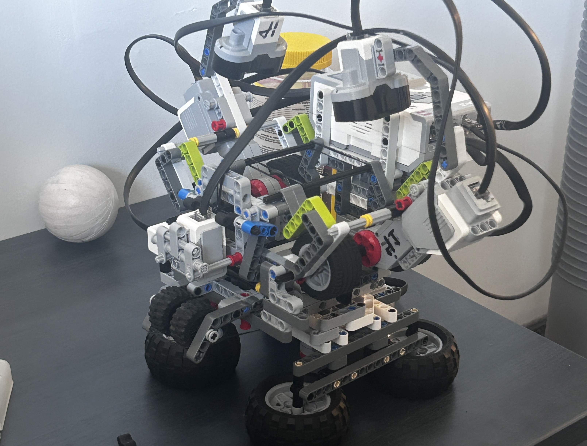
Project Overview
This project was completed as a final project in my first semester of university with three other students from my program. Over about a month, our group followed the engineering process: identifying a problem, researching and brainstorming solutions, establishing criteria and constraints, developing a proposal, prototyping, testing, redesigning, evaluating the result, and presenting the final project.
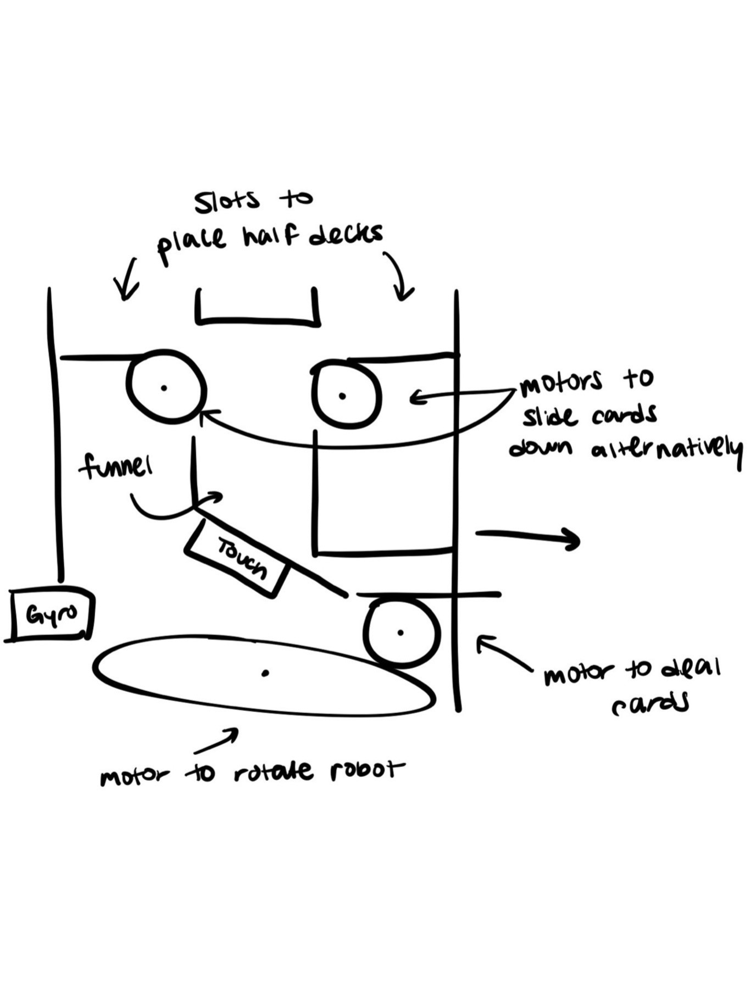
Initial Idea / Criteria
The robot had to solve a problem and had to be constructed primarily from LEGO EV3 components, with minimal outside resources. After exploring different ideas, our team drew inspiration from card dealers and casinos. Dealers are important in many card games, but they can introduce human error, cheating risk, and inconsistency. Our proposed solution was a robot capable of shuffling and dealing cards to reduce those issues.
We wanted the robot to support multiple card games with customizable settings. It needed to shuffle independently, deal according to selected settings, work with cards of different colors and conditions, and include anti-jamming behavior to improve reliability.
Designing The Robot
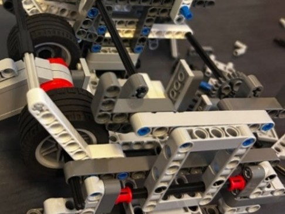
The robot used sensors to detect card placement and jams. Motors handled shuffling, dealing, and rotation, while motor encoders supported more controlled motion. A gyro sensor helped manage rotation. The software followed a structured sequence: startup, wait for cards, shuffle, deal, and run anti-jamming checks when needed.
Operation
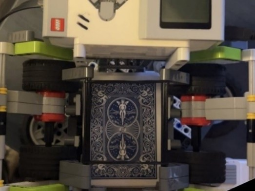
Early versions allowed cards to be removed from the center after shuffling for another shuffle pass. After redesigning, we simplified the mechanism and instead randomized the order in which cards were dealt, preserving randomness while making the robot more reliable.
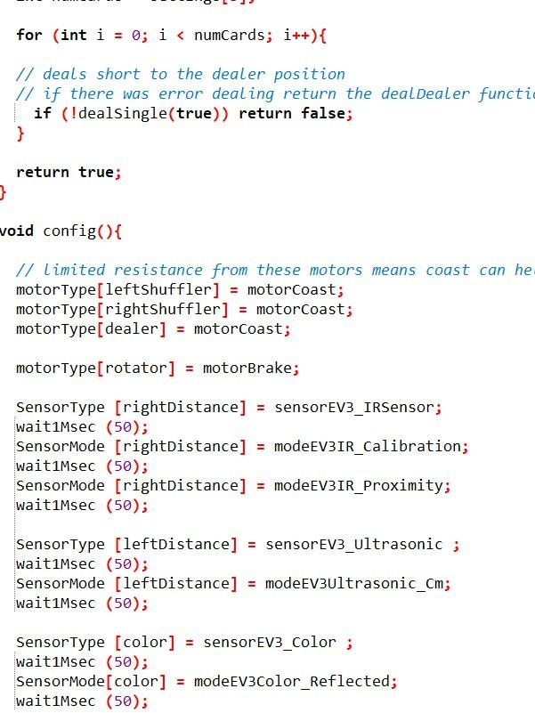
My Contribution
All team members contributed ideas, design work, and final report sections. My individual focus was primarily software. I wrote and troubleshooted much of the EV3 code and created functions for shuffling, dealing, rotation, and anti-jamming checks when sensors detected a stuck card.
A large part of my work was translating the mechanical design into reliable behavior. That meant reading sensor states, using motor encoders and the gyro sensor for more controlled motion, and adjusting timing, motor power, and logic paths when the robot mis-fed cards or stopped mid-sequence. After we simplified the dealing mechanism, I also programmed randomized deal order so the robot stayed unpredictable without needing a second shuffle pass.
During the final phase of the project, most of my time went into testing and debugging. I ran repeated trials, fixed failures as they appeared, and tuned the program for better speed and consistency. It was my first major university build, and the software side showed me how much iteration it takes to make a physical system actually work.
Reflection & Files
To evaluate the design, we tested the robot against the criteria we had defined earlier in the process. This was my first major university engineering project, and it was much more complex than anything I had done before. The amount of research, design justification, testing, and final reporting made it a strong learning experience.
Photos
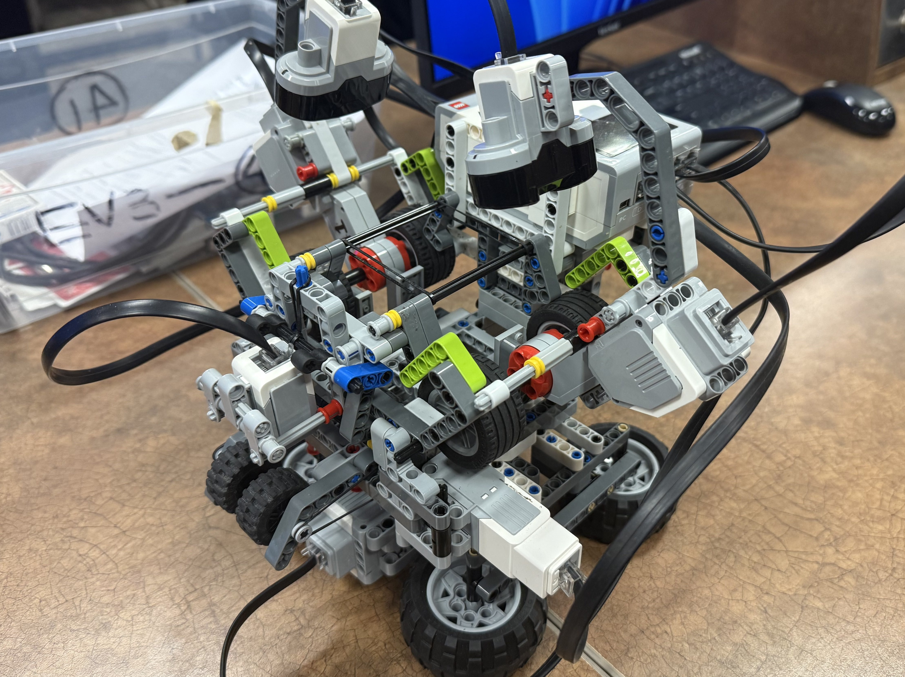
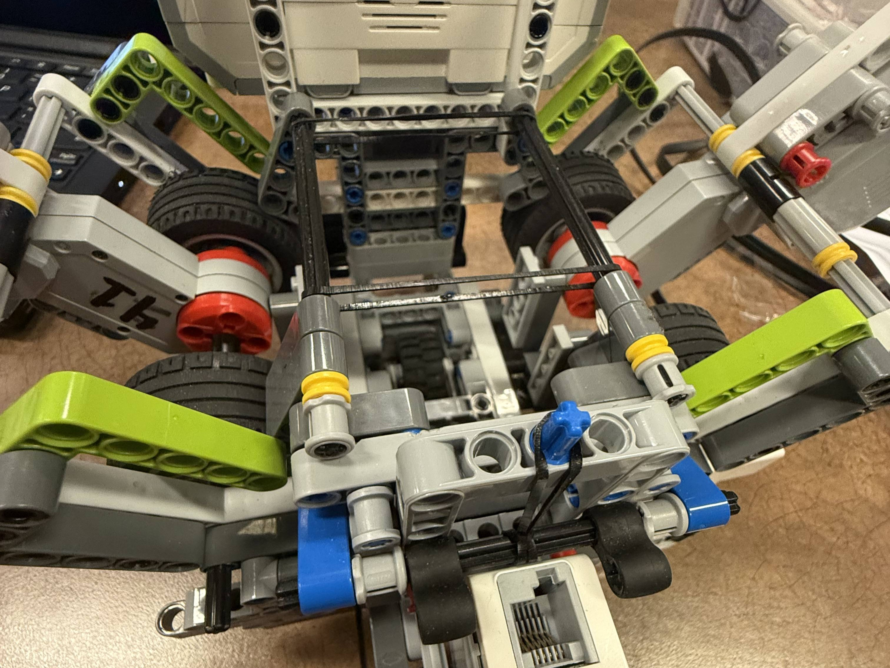
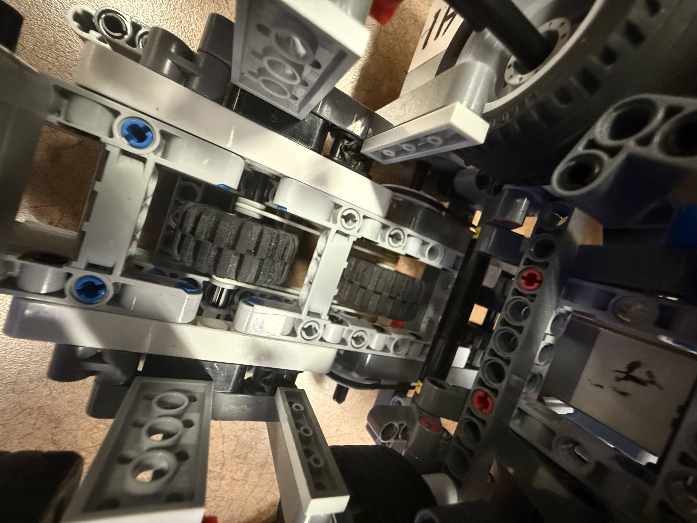
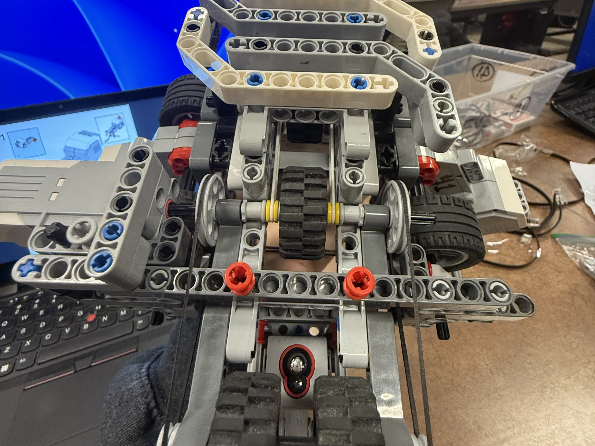
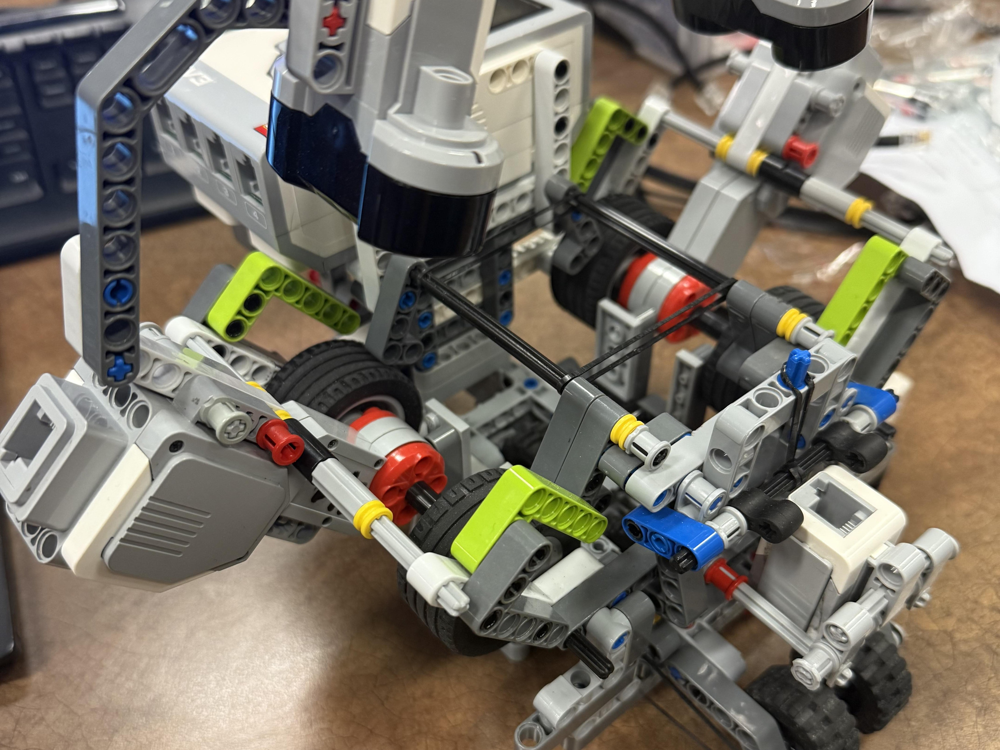
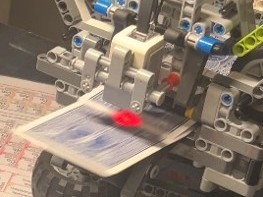